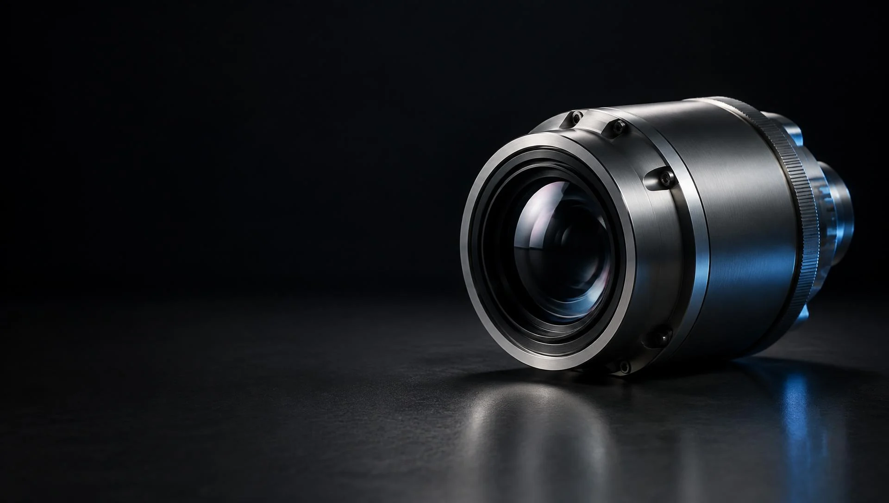
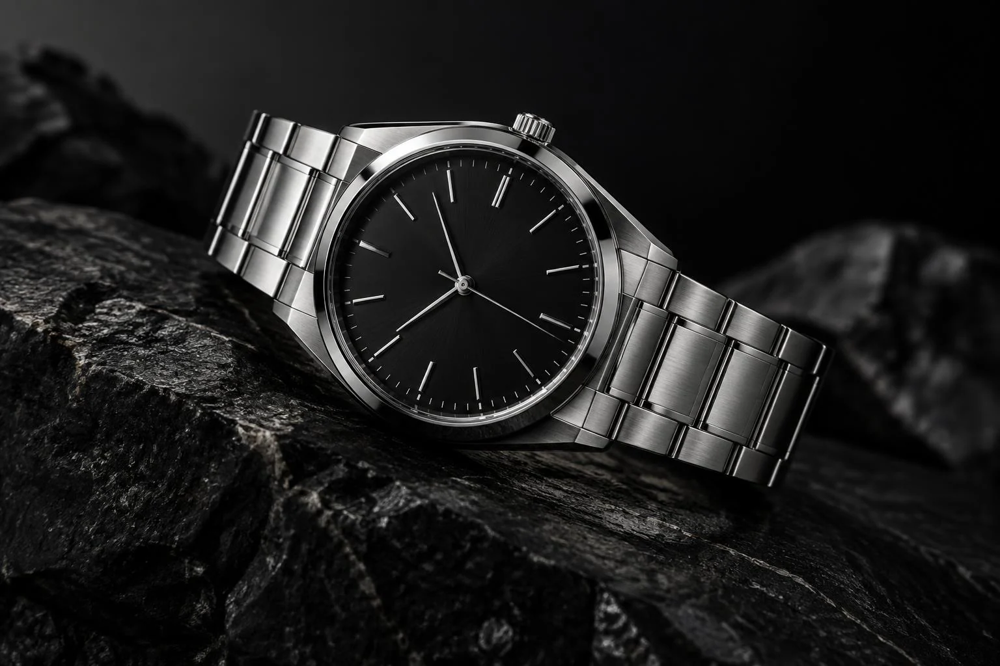
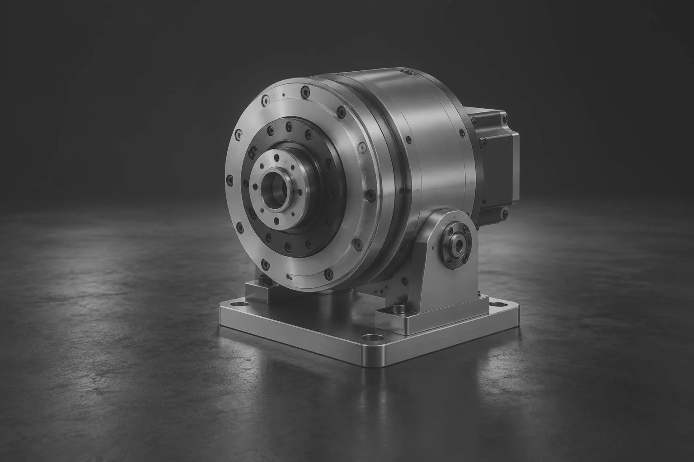

Product Accuracy
Maintain real product geometry, proportions, materials and design details.

Visual Craft Studio / CGI. Motion. Products. Experiences.
3D visualization, CGI, motion and creative technology for brands that want their products to stand out.
PRODUCT VISUALIZATION & CREATIVE TECHNOLOGY
HERO IMAGE / ILLUSTRATIVE CONCEPT
SHOWREEL
A visual perspective Concept motion preview / Animated still sequence
Concept motion preview / Animated still sequenceForm. Material. Light.

Industrial & Manufacturing
Product visualization · Material study

Premium Consumer Products
Luxury CGI concept · Art direction
Consumer Electronics
Campaign concept · Product visuals
Creative precision
Photorealistic CGI that transforms CAD files, references or product photography into premium marketing imagery.
Cinematic films, exploded views, feature animations and product storytelling.
Product campaigns, launch visuals, social media creatives and digital advertisements.
Brand identity, catalogues, brochures, presentations and visual communication.
Carefully controlled AI workflows for concept development, visualization and cinematic content while maintaining product integrity.
Real-time product visualization, augmented reality experiences and interactive sales presentations.
Why Visual Craft Studio
Great visualization requires more than attractive lighting. Dimensions, construction, materials, functionality and brand identity all matter.
Visual Craft Studio combines technical understanding with cinematic visualization to create visuals that remain believable, accurate and commercially effective.
Maintain real product geometry, proportions, materials and design details.
Professional lighting, composition, animation and storytelling.
A product-first approach to industrial and engineering visualization.
3D, AI, motion and real-time technology in a considered creative pipeline.
Made for your world
Industrial & Manufacturing
Security & Automation
Automotive
Consumer Electronics
Furniture & Interior Products
Engineering
Architecture
Medical Technology
Technology Startups
Premium Consumer Products
A considered process
Understand the product, audience and campaign objectives.
Develop visual direction, storyboard, lighting and composition.
Build, refine, render and animate the product.
Use compositing, motion design and controlled AI workflows.
Produce final assets for digital, social, print, presentations and campaigns.
A different light

Illustrative concept comparison · Same image and framing, digitally adjusted lighting and contrast.
Creative technology / Explorations
We're building the next generation of product presentation.
Your product. A new perspective.